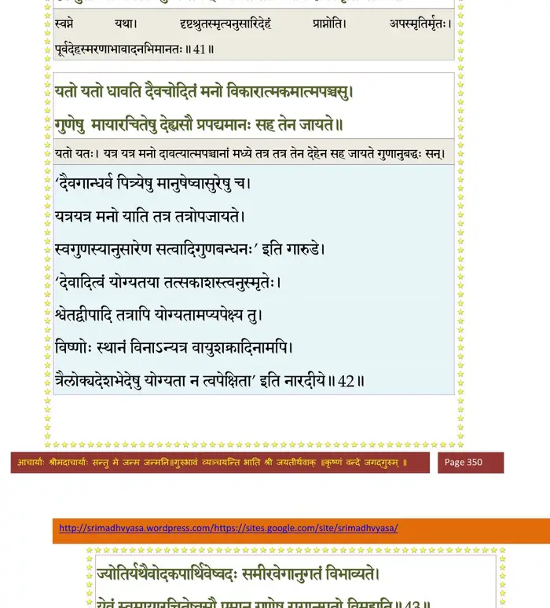
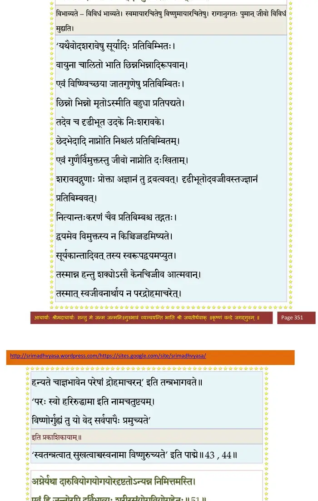
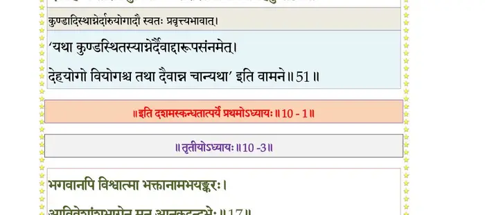

स्कन्ध 10 · अध्याय 1
श्लोक १
राजोवाच -
कथितो वंशविस्तारो भवता सोमसूर्ययोः ।
राज्ञां चोभयवंश्यानां चरितं परमाद्भुतम्।। १ ।।
कथितो वंशविस्तारो भवता सोमसूर्ययोः ।
राज्ञां चोभयवंश्यानां चरितं परमाद्भुतम्।। १ ।।
श्लोक २
यदोश्च धर्मशीलस्य नितरां मुनिसत्तम ।
तत्रांशेनावतीर्णस्य विष्णोर्वीर्याणि शंस नः।। २ ।।
तत्रांशेनावतीर्णस्य विष्णोर्वीर्याणि शंस नः।। २ ।।
श्लोक ३
अवतीर्य यदोर्वंशे भगवान् भूतभावनः ।
कृतवान् यानि विश्वात्मा तानि नो वद विस्तरात्।। ३ ।।
कृतवान् यानि विश्वात्मा तानि नो वद विस्तरात्।। ३ ।।
श्लोक ७
निवृत्ततर्षैरुपगीयमानाद् भवौषधाच्छ्रोत्रमनोभिरामात् ।
क उत्तमश्लोकगुणानुवादात् पुमान् विरज्येत विनाऽपशुघ्नान् ।।
पितामहा मे समरेऽमरञ्जयैर्देवव्रताद्यातिरथैस्तिमिङ्गिलैः ।
दुरत्ययं कौरवसैन्यसागरं कृत्वाऽतरन् वत्सपदं स्म यत्प्लवाः ।।
द्रौण्यस्त्रविप्लुष्टमिदं मदङ्गं सन्तानबीजं कुरुपाण्डवानाम् ।
जुगोप कुक्षिङ्गत आत्तचक्रो मातुश्च मे यः शरणं गतायाः ।।
वीर्याणि तस्याखिलदेहभाजामन्तर्बहिः पूरुषकालरूपैः ।
प्रयच्छतो मृत्युमनामयं च मायामनुष्यस्य वदस्व विद्वन् ।।७।।
क उत्तमश्लोकगुणानुवादात् पुमान् विरज्येत विनाऽपशुघ्नान् ।।
पितामहा मे समरेऽमरञ्जयैर्देवव्रताद्यातिरथैस्तिमिङ्गिलैः ।
दुरत्ययं कौरवसैन्यसागरं कृत्वाऽतरन् वत्सपदं स्म यत्प्लवाः ।।
द्रौण्यस्त्रविप्लुष्टमिदं मदङ्गं सन्तानबीजं कुरुपाण्डवानाम् ।
जुगोप कुक्षिङ्गत आत्तचक्रो मातुश्च मे यः शरणं गतायाः ।।
वीर्याणि तस्याखिलदेहभाजामन्तर्बहिः पूरुषकालरूपैः ।
प्रयच्छतो मृत्युमनामयं च मायामनुष्यस्य वदस्व विद्वन् ।।७।।
श्लोक ८
रोहिण्यास्तनयः प्रोक्तो रामः सङ्कर्षणस्त्वया ।
देवक्या गर्भसम्बन्धः कुतो देहान्तरं विना ।। ८ ।।
देवक्या गर्भसम्बन्धः कुतो देहान्तरं विना ।। ८ ।।
श्लोक ९
कस्मान्मुकुन्दो भगवान् पितुर्गेहाद् व्रजं गतः ।
क्व वासं ज्ञातिभिः सार्धं कृतवान् सात्वतां पतिः ।। ९ ।।
क्व वासं ज्ञातिभिः सार्धं कृतवान् सात्वतां पतिः ।। ९ ।।
श्लोक १०
व्रजे वसन् किमकरोन्मधुपुर्यां च केशवः ।
भ्रातरं चावधीत् कंसं मातुरद्धाऽतदर्हणम् ।। १० ।।
भ्रातरं चावधीत् कंसं मातुरद्धाऽतदर्हणम् ।। १० ।।
श्लोक ११
देहं मानुषमाश्रित्य कति वर्षाणि वृष्णिभिः ।
यदुपुर्यां सहावात्सीत् पत्न्यः कत्यभवन् विभोः।। ११ ।।
यदुपुर्यां सहावात्सीत् पत्न्यः कत्यभवन् विभोः।। ११ ।।
श्लोक १२
एतदन्यच्च सर्वं मे मुने कृष्णविचेष्टितम् ।
वक्तुमर्हसि सर्वज्ञ श्रद्दधानाय विस्तृतम् ।। १२ ।।
वक्तुमर्हसि सर्वज्ञ श्रद्दधानाय विस्तृतम् ।। १२ ।।
श्लोक १३
नैषाऽतिदुस्सहा क्षुन्मां त्यक्तोदमपि बाधते ।
पिबन्तं त्वन्मुखाम्भोजसृतं हरिकथामृतम्।। १३ ।।
पिबन्तं त्वन्मुखाम्भोजसृतं हरिकथामृतम्।। १३ ।।
श्लोक १५
सूत उवाच–
एवं निशम्य भृगुनन्दन साधुवादं वैयासकिः स भगवानथ विष्णुरातम् ।
प्रत्यर्च्य कृष्णचरितं कलिकल्मषघ्नं व्याहर्तुमारभत भागवतप्रधानः।।
श्रीशुक उवाच–
सम्यग् व्यवसिता बुद्धिस्तव राजर्षिसत्तम ।
वासुदेवकथायां ते यज्जाता नैष्ठिकी रतिः।। १५ ।।
एवं निशम्य भृगुनन्दन साधुवादं वैयासकिः स भगवानथ विष्णुरातम् ।
प्रत्यर्च्य कृष्णचरितं कलिकल्मषघ्नं व्याहर्तुमारभत भागवतप्रधानः।।
श्रीशुक उवाच–
सम्यग् व्यवसिता बुद्धिस्तव राजर्षिसत्तम ।
वासुदेवकथायां ते यज्जाता नैष्ठिकी रतिः।। १५ ।।
श्लोक १६
वासुदेवकथाप्रश्नः पुरुषांस्त्रीन् पुनाति हि ।
वक्तारं पुच्छकं श्रोतॄंस्तत्पादसलिलं यथा।। १६ ।।
वक्तारं पुच्छकं श्रोतॄंस्तत्पादसलिलं यथा।। १६ ।।
श्लोक १७
भूमिर्दृप्तनृपव्याजदैत्यानीकशतायुतैः ।
आक्रान्ता भूरिभारेण ब्रह्माणं शरणं ययौ।। १७ ।।
आक्रान्ता भूरिभारेण ब्रह्माणं शरणं ययौ।। १७ ।।
श्लोक १८
गौर्भूत्वाऽश्रुमुखी खिन्ना रुदन्ती करुणं यथा ।
उपस्थिताऽन्तिके त(स्य)स्मै व्यसनं समवोचत।। १८ ।।
उपस्थिताऽन्तिके त(स्य)स्मै व्यसनं समवोचत।। १८ ।।
श्लोक १९
ब्रह्मा तदुपधार्याथ सह देवैस्तया सह ।
जगाम सत्रिनयनस्तीरं क्षीरपयोनिधेः ।। १९ ।।
जगाम सत्रिनयनस्तीरं क्षीरपयोनिधेः ।। १९ ।।
श्लोक २०
तत्र गत्वा जगन्नाथं देवदेवं वृषाकपिम् ।
पुरुषं पुरुषसूक्तेन उपतस्थे समाहितः ।। २० ।।
पुरुषं पुरुषसूक्तेन उपतस्थे समाहितः ।। २० ।।
श्लोक २२
गिरं समाधौ गगने समीरितां निशम्य वेधास्त्रिदशानुवाच ह ।
गां पौरुषीं मे शृणुतामराः पुनर्विधीयतामाशु तथैव मा चिरम् ।।
पुरैव पुंसाऽवधृतो धराज्वरो भवद्भिरंशैर्यदुषूपजन्यताम् ।
स यावदुर्व्या भरमीश्वरेश्वरः स्वकालशक्त्या क्षपयंश्चरेद् भुवि।। २२ ।।
गां पौरुषीं मे शृणुतामराः पुनर्विधीयतामाशु तथैव मा चिरम् ।।
पुरैव पुंसाऽवधृतो धराज्वरो भवद्भिरंशैर्यदुषूपजन्यताम् ।
स यावदुर्व्या भरमीश्वरेश्वरः स्वकालशक्त्या क्षपयंश्चरेद् भुवि।। २२ ।।
श्लोक २३
वसुदेवगृहे साक्षाद् भगवान् पुरुषः परः ।
जनिष्यते तत्प्रियार्थं सम्भवन्तु सुरस्त्रियः ।। २३ ।।
जनिष्यते तत्प्रियार्थं सम्भवन्तु सुरस्त्रियः ।। २३ ।।
श्लोक २४
वासुदेवकलानन्तः सहस्रवदनः स्वराट् ।
अग्रतो भविता देवो हरेः प्रियचिकीर्षया ।। २४ ।।
अग्रतो भविता देवो हरेः प्रियचिकीर्षया ।। २४ ।।
श्लोक २५
योगमाया भगवती यया सम्मोहितं जगत् ।
आदिष्टा प्रभुणांऽशेन कार्यार्थे सम्भविष्यति ।। २५ ।।
आदिष्टा प्रभुणांऽशेन कार्यार्थे सम्भविष्यति ।। २५ ।।
श्लोक २६
श्रीशुक उवाच -
इत्यादिश्यामरगणान् प्रजापतिपतिर्विभुः ।
आश्वास्य च महीं गीर्भिः स्वधाम परमं ययौ ।। २६ ।।
इत्यादिश्यामरगणान् प्रजापतिपतिर्विभुः ।
आश्वास्य च महीं गीर्भिः स्वधाम परमं ययौ ।। २६ ।।
भागवततात्पर्यनिर्णय
श्लोक २७
शूरसेनो यदुपतिर्मधुरामावसत् पुरीम् ।
माधुरान् शूरसेनांश्च विषयान् बुभुजे स्वराट् ।। २७ ।।
माधुरान् शूरसेनांश्च विषयान् बुभुजे स्वराट् ।। २७ ।।
श्लोक २८
राजधानी ततः साऽभूत्सर्वयादवभूभुजाम् ।
मधुरा भगवान् यत्र नित्यं सन्निहितो हरिः ।। २८ ।।
मधुरा भगवान् यत्र नित्यं सन्निहितो हरिः ।। २८ ।।
श्लोक २९
तस्यां तु कर्हिचिच्छौरिर्वसुदेवः कृतोद्वहः ।
देवक्या भार्यया सार्धं प्रयाणे रथमारुहत् ।। २९ ।।
देवक्या भार्यया सार्धं प्रयाणे रथमारुहत् ।। २९ ।।
श्लोक ३०
उग्रसेनसुतः कंसः स्वसुः प्रियचिकीर्षया ।
रश्मीन् हयानां जगृहे रौक्मै रथशतैर्वृतः ।। ३० ।।
रश्मीन् हयानां जगृहे रौक्मै रथशतैर्वृतः ।। ३० ।।
श्लोक ३१
चतुश्शतं पारिबर्हं गजानां हेममालिनाम् ।
अश्वानामयुतं सार्धं रथानां च त्रिषट्शतम् ।। ३१ ।।
अश्वानामयुतं सार्धं रथानां च त्रिषट्शतम् ।। ३१ ।।
श्लोक ३२
दासीनां सुकुमारीणां द्वे शते समलङ्कृते ।
दुहित्रे देवकः प्रादाद् यामे दुहितृवत्सलः ।। ३२ ।।
दुहित्रे देवकः प्रादाद् यामे दुहितृवत्सलः ।। ३२ ।।
श्लोक ३३
शङ्खतूर्यमृदङ्गानि नेदुर्दुन्दुभयः समम् ।
प्रयाणप्रक्रमे तात वरवध्वोः सुमङ्गलम् ।। ३३ ।।
प्रयाणप्रक्रमे तात वरवध्वोः सुमङ्गलम् ।। ३३ ।।
श्लोक ३४
पथि प्रग्रहिणं कंसमाभाष्याहाशरीरवाक् ।
अस्यास्त्वामष्टमो गर्भो हन्ता यां नयसेऽबुध ।। ३४ ।।
अस्यास्त्वामष्टमो गर्भो हन्ता यां नयसेऽबुध ।। ३४ ।।
श्लोक ३५
इत्युक्तः स खलः पापो भोजानां कुलपांसनः ।
भगिनीं हन्तुमारब्धः खड्गपाणिः कचेऽग्रहीत् ।। ३५ ।।
भगिनीं हन्तुमारब्धः खड्गपाणिः कचेऽग्रहीत् ।। ३५ ।।
श्लोक ३६
तं जुगुप्सितकर्माणं नृशंसं निरपत्रपम् ।
वसुदेवो महाभाग उवाच परिसान्त्वयन् ।। ३६ ।।
वसुदेवो महाभाग उवाच परिसान्त्वयन् ।। ३६ ।।
श्लोक ३७
वसुदेव उवाच–
श्लाघनीयगुणः शूरैर्भवान् भोजयशस्करः ।
स कथं भगिनीं हन्याः स्त्रियमुद्वाहपर्वणि।। ३७ ।।
श्लाघनीयगुणः शूरैर्भवान् भोजयशस्करः ।
स कथं भगिनीं हन्याः स्त्रियमुद्वाहपर्वणि।। ३७ ।।
श्लोक ३८
मृत्युर्जन्मवतां वीर देहेन सह जायते ।
अद्य वाऽब्दशतान्ते वा मृत्युर्वै प्राणिनां ध्रुवः ।। ३८ ।।
अद्य वाऽब्दशतान्ते वा मृत्युर्वै प्राणिनां ध्रुवः ।। ३८ ।।
श्लोक ३९
देहे पञ्चत्वमापन्ने देही कर्मानुगोऽवशः ।
देहान्तरमनुप्राप्य प्राक्तनं त्यजते वपुः ।। ३९ ।।
देहान्तरमनुप्राप्य प्राक्तनं त्यजते वपुः ।। ३९ ।।
श्लोक ४०
व्रजंस्तिष्ठन् पदैकेन यथैवेकेन गच्छति ।
यथा तृणजलूकैवं देही कर्मगतिं गतः ।। ४० ।।
यथा तृणजलूकैवं देही कर्मगतिं गतः ।। ४० ।।
श्लोक ४२
स्वप्ने यथा पश्यति देहमीदृशं मनोरथेनाभिनिविष्टचेतनः ।
दृष्टश्रुताभ्यां मनसाऽनुचिन्तयन् प्रपद्यते तत् किमपि ह्यपस्मृतिः ।।
यतो यतो धावति दैवचोदितं मनो विकारात्मकमात्मपञ्चसु ।
गुणेषु मायारचितेषु देह्यसौ प्रपद्यमानः सह तेन जायते।। ४२ ।।
दृष्टश्रुताभ्यां मनसाऽनुचिन्तयन् प्रपद्यते तत् किमपि ह्यपस्मृतिः ।।
यतो यतो धावति दैवचोदितं मनो विकारात्मकमात्मपञ्चसु ।
गुणेषु मायारचितेषु देह्यसौ प्रपद्यमानः सह तेन जायते।। ४२ ।।
भागवततात्पर्यनिर्णय

श्लोक ४४
ज्योतिर्यथैवोदकपार्थिवेष्वदः समीरवेगानुगतं विभाव्यते ।
एवं स्वमायारचितेष्वसौ पुमान् गुणेषु रागानुगतो विमुह्यति।। ४५
तस्मान्न कस्यचिद् द्रोहमाचरेत् स तथाविधः ।
आत्मनः क्षेममन्विच्छन् द्रोग्धुर्वै परतो भयम् ।। ४४ ।।
एवं स्वमायारचितेष्वसौ पुमान् गुणेषु रागानुगतो विमुह्यति।। ४५
तस्मान्न कस्यचिद् द्रोहमाचरेत् स तथाविधः ।
आत्मनः क्षेममन्विच्छन् द्रोग्धुर्वै परतो भयम् ।। ४४ ।।
भागवततात्पर्यनिर्णय

श्लोक ४५
एष तवानुजा बाला कृपणा पुत्रिकोपमा ।
हन्तुं नार्हसि कल्याणीमिमां त्वं दीनवत्सल ।। ४५ ।।
हन्तुं नार्हसि कल्याणीमिमां त्वं दीनवत्सल ।। ४५ ।।
श्लोक ४६
श्रीशुक उवाच–
एवं स सामभिर्भेदैर्बोध्यमानोऽपि दारुणः ।
न न्यवर्तत कौरव्य पुरुषादाननुव्रतः ।। ४६ ।।
एवं स सामभिर्भेदैर्बोध्यमानोऽपि दारुणः ।
न न्यवर्तत कौरव्य पुरुषादाननुव्रतः ।। ४६ ।।
श्लोक ४७
निर्बन्धं तस्य तं ज्ञात्वा विचिन्त्यानकदुन्दुभिः ।
प्राप्तकालं प्रतिव्योढुमिदं तत्रान्वपद्यत ।। ४७ ।।
प्राप्तकालं प्रतिव्योढुमिदं तत्रान्वपद्यत ।। ४७ ।।
श्लोक ४८
मृत्युर्बुद्धिमताऽपोह्यो यावद्बुद्धिबलोदयम् ।
यद्यसौ न निवर्तेत नापराधोऽस्ति देहिनः ।। ४८ ।।
यद्यसौ न निवर्तेत नापराधोऽस्ति देहिनः ।। ४८ ।।
श्लोक ४९
प्रत्यर्प्य मृत्यवे पुत्रान् मोचये कृपणामिमाम् ।
सुता मे यदि जायेरन् मृत्युर्वा न म्रियेत चेत् ।। ४९ ।।
सुता मे यदि जायेरन् मृत्युर्वा न म्रियेत चेत् ।। ४९ ।।
श्लोक ५०
विपर्ययो वा किं न स्याद् गतिर्धातुर्दुरत्यया ।
उपस्थितो निवर्तेत निवृत्तः पुनरापतेत् ।। ५० ।।
उपस्थितो निवर्तेत निवृत्तः पुनरापतेत् ।। ५० ।।
श्लोक ५१
अग्नेर्यथा दारुवियोगयोगयोरदृष्टतोऽन्यन्न निमित्तमस्ति ।
एवं हि जन्तोरपि दुर्विभाव्यः शरीरसंयोगवियोगहेतुः।। ५१ ।।
एवं हि जन्तोरपि दुर्विभाव्यः शरीरसंयोगवियोगहेतुः।। ५१ ।।
भागवततात्पर्यनिर्णय

श्लोक ५२
एवं विमृश्य तं पापं यावदात्मनि दर्शनम् ।
सान्त्वयामास वै शौरिर्बहुमानपुरस्सरम् ।। ५२ ।।
सान्त्वयामास वै शौरिर्बहुमानपुरस्सरम् ।। ५२ ।।
श्लोक ५३
प्रसन्नवदनाम्भोजो नृशंसं निरपत्रपम् ।
मनसा दूयमानेन प्रहसन्निदमब्रवीत् ।। ५३ ।।
मनसा दूयमानेन प्रहसन्निदमब्रवीत् ।। ५३ ।।
श्लोक ५४
वसुदेव उवाच–
न ह्यस्यास्ते भयं सौम्य यद् वै त्वाऽऽहाशरीरवाक् ।
पुत्रान्समर्पयिष्येऽस्या यतस्ते भयमुत्थितम् ।। ५४ ।।
न ह्यस्यास्ते भयं सौम्य यद् वै त्वाऽऽहाशरीरवाक् ।
पुत्रान्समर्पयिष्येऽस्या यतस्ते भयमुत्थितम् ।। ५४ ।।
।। इति श्रीमद्भागवते दशमस्कन्धे प्रथमोऽध्यायः ।।